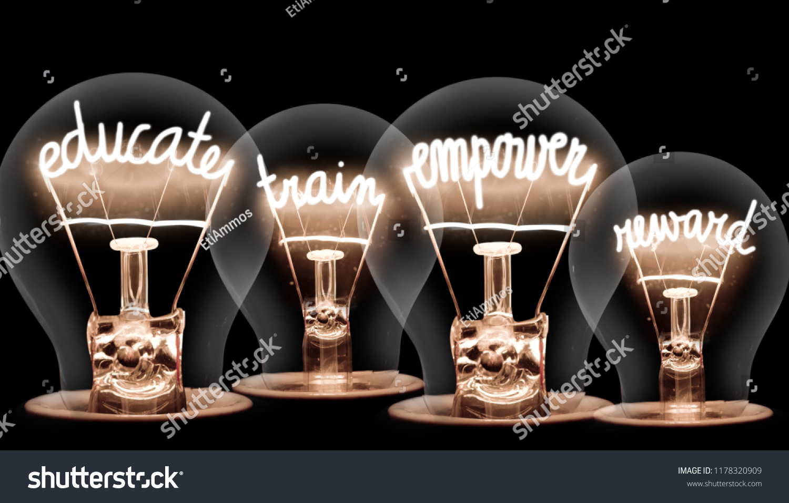
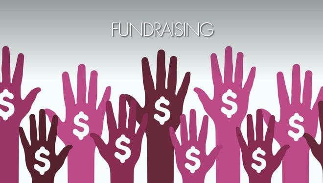
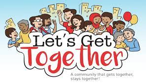

Serving the youth members in the communities of Springfield, Ma.

What is Empower Community Mentoring Group about?
Empower Community Mentoring Group is a mentorship program designed to make positive connections with the young members of our community and build strong trusting relationships that will motivate and guide them to thier own individual paths of goal setting and future success. We believe that as mentors we have the capacity to influence, teach, and encourage positive behaviors in high-risk youth. Our purpose is to Enable the young people of our community while leading by example. To Motivate the young members with Perserverence and prosperity, also with Objectivity, treating everyone fairly, as We, us, together, as a team in our Environment get to know and understand our surroundings while Respecting ourselves and others.
Mission of the founder
How might I build a mentoing program that will positively influence young community members to better understand themselves while undrstanding their environment that will set them on the right course to success? Nigja McQuarley was motivated by her own personal experiences to start this mentoring program. Her lack of guidance and poor decision making as a teenager eventually lead her to be committed to the Department of Youth Services. This path would ultimately land her in various adult institutions in and out of Massachusetts. During this journey she gained understanding of who she was and was able to overcome many challanages. As a result of these experiences she was encouraged and inspired to become a better person and lead by example. She hopes to drive change in the community by creating a safe place where young people are able to come together and connect with mentors that have their best interest in mind. Nigja has been moved to, and believes that she can, aid young members of the community with finding the right path away from trouble toward success. It is her mission to make a difference in their lives beginning with this program.
ECMG welcomes mentors that are driven to be leaders and positive influences in the lives of young people. Your support is very much appreciated.
Programs & Discussion Groups:
Introduction- Getting to know ourselves and others
Creative Writing
Focus#1: What is My Vision
Focus#2: Creating My Vision
Lets Talk About Goals
Skill Development
Tutorial Guidance
What's Happening in the Community?
Community Impact
Community Give Back Services:
Operation: Clean Our Streets/ Picking Trash in the Neighborhood
Free Lunch Weekends/Feeding the Neighborhood Children
Lending a Helping Hand/Helping Out Our Local Businesses
Back to School Give Aways

Fund Raising:
Bake Sales
Car Washes

Fun Days/ Get Togethers:
Cook Outs
Six Flags New England
Educational Feildtrips
If you would like to become a mentor/ mentee member of Empower Community Mentor Group sign up below: